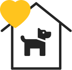
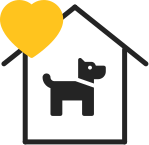
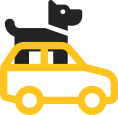

Срочно необходимо забрать собаку (мальчик) на передержку или насовсем. Послезавтра его ждет усыпление. С кормом и доставкой поможем. В данный момент находится в вольера САХа.
Контактный телефон + 37529 58930557
Спасите жизнь хвостику.
Благотворительное общественное объединение защиты животных
Наша цель: помощь бездомным животным. Также мы поддерживаем хвостиков,
которые оказались в пункте отлова и временного содержания в Гродно.
У животных, находящихся в пункте отлова и временного содержания бродячих животных, есть всего несколько дней до усыпления...
Хочу помочьЕжедневно в пункт временного содержания, путём отлова, попадают безнадзорные собаки и коты. По закону, у животных находящихся в САХе есть всего лишь несколько дней, чтобы найти прежнего или обрести нового хозяина. В противном случае невостребованных животных ждёт УСЫПЛЕНИЕ! Здесь вы сможете найти своего как потерявшегося, так и нового верного друга!
Если нет возможности забрать хвостика, вы можете помочь нам финансово или другой материальной помощью. Еще нам всегда нужны добрые и отзывчивые люди - волонтеры, без вас очень трудно!
 

Самая большая помощь - это спасти жизнь
животному, забрать домой, или помочь хвостику с
поиском дома. У наших подопечных очень мало
времени. Рассказывайте друзьям и знакомым о
наших хвостиках, возможно кому-то нужен будет
именно такой друг.
Когда животных ждет скорое усыпление, очень
важно найти ему дом. Но пока дом и новые или
старые хозяева разыскиваются, хвостику нужно
где-то жить. Вы можете забрать к себе домой
животных на время. Волонтеры, в свою очередь,
обязательно помогут с поиском нового дома.
Мальчик, 7 месяцев
К поводку приучен. Не агрессивный. В еде не привередничает. С другими животными не конфликтует. Привит. Очень плачет и хочет на ручки. Отдается только в добрые руки и под паспорт.
Мальчик, 7 месяцев
Она не знает, что такое – царапаться и кусаться, она не знает, что такое нападать на других животных.
Мальчик, 7 месяцев
К поводку приучен. Не агрессивный. В еде не привередничает. С другими животными не конфликтует. Привит. Очень плачет и хочет на ручки. Отдается только в добрые руки и под паспорт.
Мальчик, 7 месяцев
Веселый и очень игривый, ему так нужны ваша любовь и ласка. У него потрясающая густая шерсть в полосочку, «серьезные» желтые глаза и длиннющие белые усы.
Девочка, 4 месяца
Девочке 4 месяца жила в ужасных условиях, бывшая хозяйка могла исчезнуть на двое суток закрыв её одну в комнате без еды, ей нельзя там больше оставаться. Мила очень ласковая, забавная, в еде не привередлива.
Мальчик, 7 месяцев
Веселый и очень игривый, ему так нужны ваша любовь и ласка. У него потрясающая густая шерсть в полосочку, «серьезные» желтые глаза и длиннющие белые усы.
Такая помощь необходима для оплаты стерилизации, прививок, лечения больных животных, покупка корма и других жизненно необходимых вещей.
БООЗЖ "СПАСИ ЖИЗНЬ"
УНП: 590375680
Текущий (расчетный) счет в BYN:
BY13ALFA30152555460010270000
ЗАО 'Альфа-Банк'
БИК: ALFABY2X
Можно помочь с покупкой и доставкой еды для хвостатых:
• Быстроразваривающиеся крупы: дроблёная гречка, овсянка, сечка,
овсяные/гречневые хлопья, не требующие варки;
• Сухие и влажные корма для собак и котов (кроме Рекс и Petboom),
• Фарш для собак, "БОБИКИ" и др.
Вы можете помочь в приготовлении каш и их доставке!
Нам необходимы препараты: цефтриаксон (флакон по 0,5 г); новокаин (раствор для инъекций); гискан; гамавит; катозал; антитокс фоспренил; энтеросгель (паста); препараты от глистов, блох, клещей, для заживления ран.
Для содержания животных всегда необходимы: • Ошейники, поводки, намордники; • Опилки и солома в любом количестве; • Посуда для животных и для приготовления еды - миски, кастрюли, ножи, черпаки и др.); • Теплые вещи, лежаки для утепления и уюта животных; • Будки.
Кому и куда передать?

Важной помощью будет транспортировка. Необходимо отвозить животных в ветеринарную клинику в сопровождении нашего волонтера или привозить еду. Если у вас есть автомобиль, немного свободного времени и доброе сердце - будем вам рады.
Катастрофически не хватает добрых людей, которые готовы поделиться своим временем и окружить заботой животных. Много опыта не нужно, все расскажем и поможем! Если Вы располагаете несколькими часами свободного времени, проведите его с пользой! Главное условие - это Ваше совершеннолетие и любовь к животным!
Часто животным не хватает обычных прогулок и игры, они сидят в клетках и грустят.
Срочно необходимо забрать собаку (мальчик) на передержку или насовсем. Послезавтра его ждет усыпление. С кормом и доставкой поможем. В данный момент находится в вольера САХа.
Контактный телефон + 37529 58930557
Спасите жизнь хвостику.
Найдены бездомные щенки по улице Горького д.56.
Сегодня будут перевезены в вольеры САХа. Если у вас есть возможность взять на передержку или пристроить малышей - будем вам очень благодарны.
Мы - благотворительное общественное объединение защиты животных «СПАСИ ЖИЗНЬ». Цель нашей деятельности: помощь бездомным животным, оказавшимся в Пункте отлова и временного содержания безнадзорных животных г.Гродно.
Если Вы хотите приютить одного из этих четвероногих или оказать какую-либо помощь, звоните волонтёрам:
+375 (33) 6237879, Лена
+375 (29) 7877791, Ольга
+375 (29) 5837015, Рита
Связаться с нами можно написав в соц. сетях.